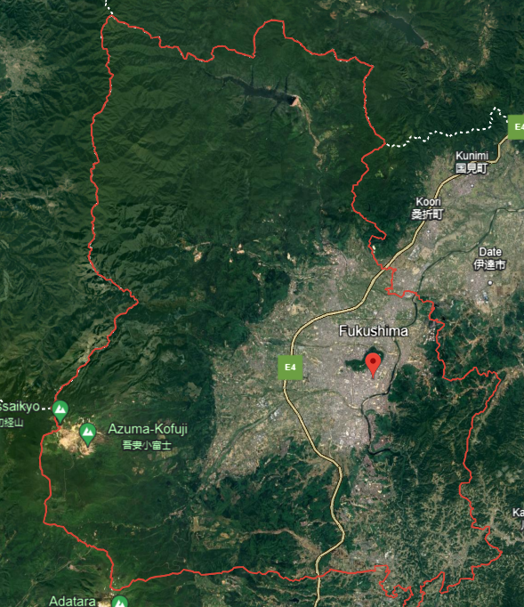

Fukushima, Japan -INES 7
Der 11. März 2011 versetzte Japan in einen Ausnahmezustand, der bis heute anhält. Die dreifache
Katastrophe von Erdbeben, Tsunami-Flutwelle und Super-GAU traf das Land bis ins Mark.
Große Teile der japanischen Landesfläche wurde rund um Fukushima Daiichi kontaminiert.
Mehr als 22.000 Menschen verloren durch Erdbeben und Tsunami ihr Leben, hunderttausende mussten
aufgrund der radioaktiven Verseuchung evakuiert werden.
Die gesundheitlichen Folgen wiegen schwer: Viele weitere leiden unter Traumata, bei Kindern
treten zudem vermehrt Schilddrüsenerkrankungen auf.
Im Oktober 2015 bestätigte das japanische Gesundheitsministerium offiziell den ersten Leukämiefall eines
Arbeiters in der havarierten Atomanlage, der in direktem Zusammenhang mit dem Unglück steht. Unter den
sozialen Folgen der Katastrophe leiden besonders Frauen und Kinder.
Mindestens 60.000 Menschen mussten ihre Häuser sofort verlassen.
Die Aufräumarbeiten hatten nur mäßigen Erfolg.
Zum Vergleich: Fünf Jahre nach der Katastrophe von Tschernobyl, die sich im April 1986 ereignete, lagen
die Werte im Umkreis von 30 Kilometern bei nur fünf Millisievert – und dieses Gebiet ist bis heute
gesperrt.
